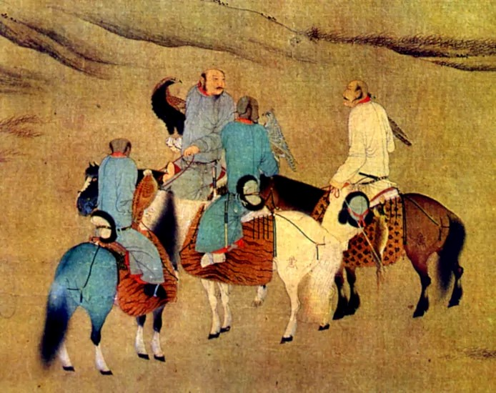
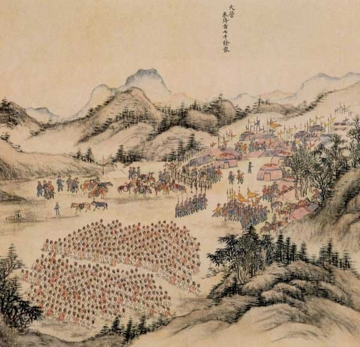
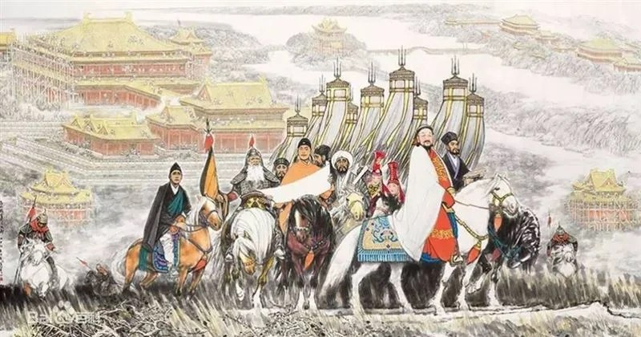
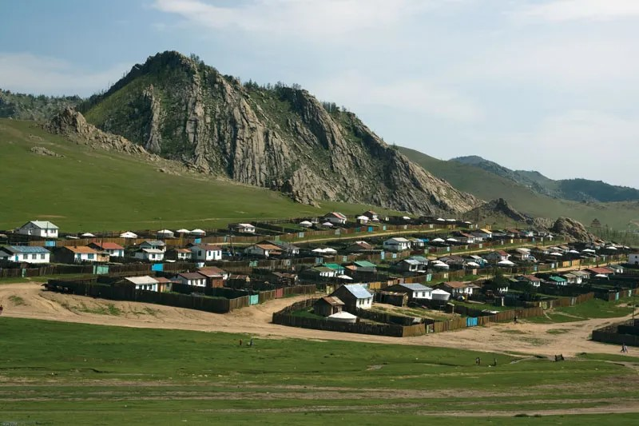

Paleolithic and Neolithic Eras: Mongolia was home to early human settlements dating back to the Stone Age with archaeological sites indicating a continuous presence of human activity.
Bronze Age: The region saw the rise of nomadic pastoralism with the development of bronze tools and weapons. Cultures such as the Karasuk and the early nomadic tribes flourished during this time.
One of the first notable empires to emerge in Mongolia was the Xiongnu, a confederation of nomadic tribes who were formidable rivals of the Han Dynasty of China. The Xiongnu established a vast empire that extended across much of Central Asia and was known for its sophisticated military tactics and horseback warfare.
Following the decline of the Xiongnu, the Rouran Khaganate rose to prominence, continuing the tradition of powerful nomadic confederations in the region. The Rouran were eventually overthrown by the Gokturks, another significant nomadic empire.
The Gokturks established a vast empire that controlled much of Central Asia, including Mongolia. After the fall of the Gokturks, the Uyghur Khaganate became the dominant power, playing a crucial role in the cultural and political landscape of the region.
The most significant period in Mongolia's history came with the rise of the Mongol Empire under Genghis Khan (Chinggis Khan) in the early 13th century. Genghis Khan united the Mongol tribes and embarked on a series of military campaigns that created the largest contiguous empire in history, stretching from Eastern Europe to East Asia. After Genghis Khan's death, the empire was divided among his descendants, leading to the formation of various khanates including the Yuan Dynasty in China founded by Kublai Khan.
In the late 17th century, the Qing Dynasty of China gradually incorporated Mongolia into its territory. The process was completed by 1691 following the defeat of the Dzungar Khanate. Mongolia was divided into Inner Mongolia and Outer Mongolia, with the latter retaining more autonomy under the Qing administration. The Qing rule brought relative stability but also a degree of economic stagnation and cultural suppression as the Manchu rulers sought to control the nomadic population.
In 1911, following the collapse of the Qing Dynasty, Outer Mongolia declared its independence and established the Bogd Khanate under the spiritual leader Bogd Khan. However, Mongolia's independence was not fully recognized by China, leading to a period of uncertainty and conflict.
In 1924, with Soviet support, the Mongolian People's Republic was established, transforming the country into a socialist state aligned with the Soviet Union. The socialist era saw significant changes including land collectivization, industrialization, and suppression of traditional culture and religion.
In 1990, Mongolia underwent a peaceful democratic revolution leading to the adoption of a multi-party system and a market economy. The 1992 constitution established Mongolia as a democratic republic, and the country has since experienced economic growth and increased political freedom. Mongolia continues to balance its relationships with neighboring China and Russia while seeking greater integration with the global community.
